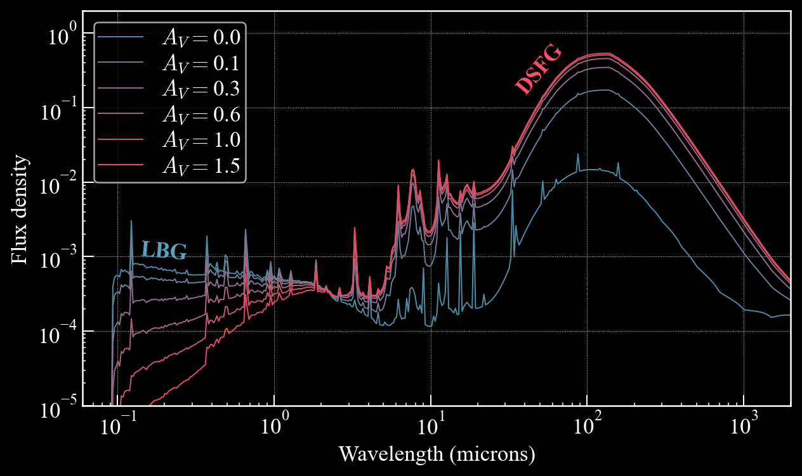
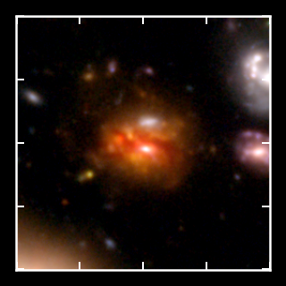
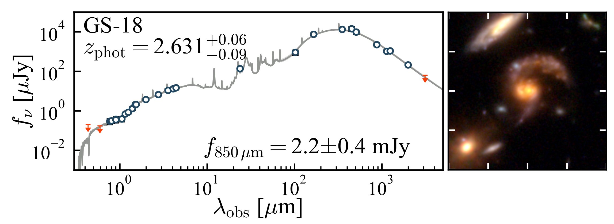
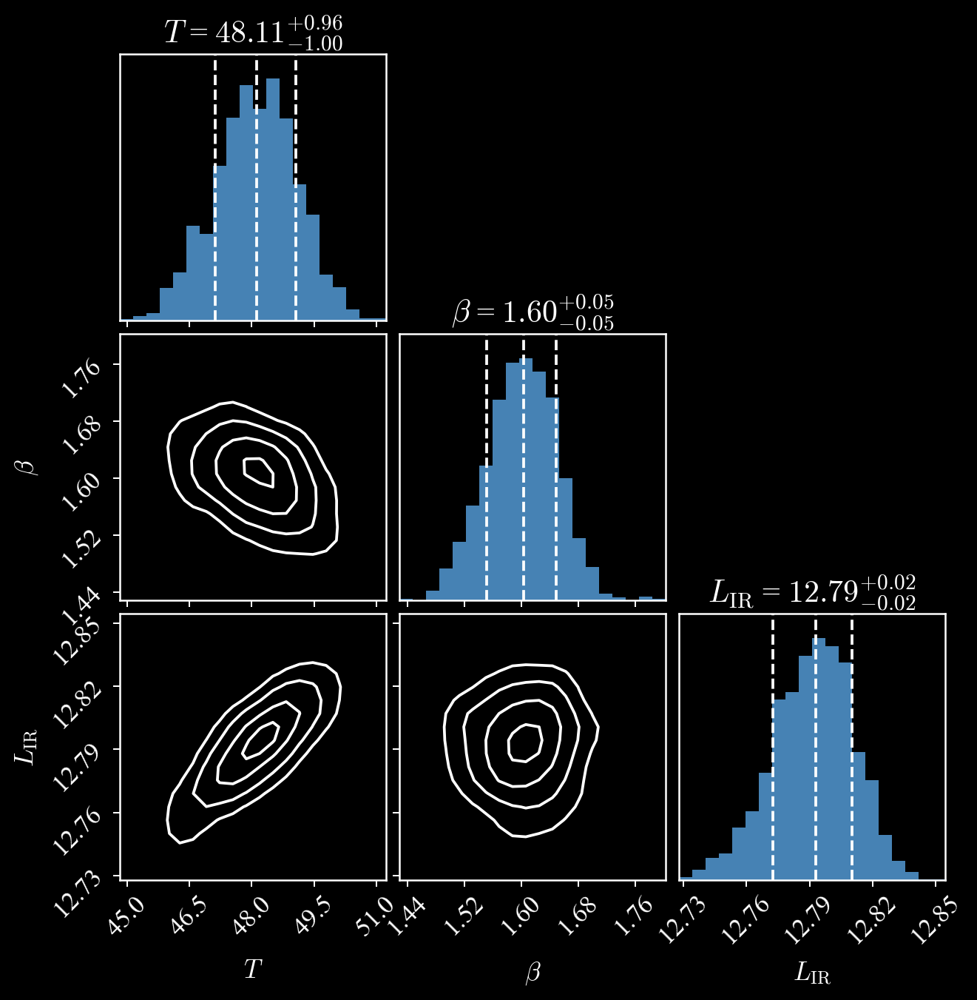
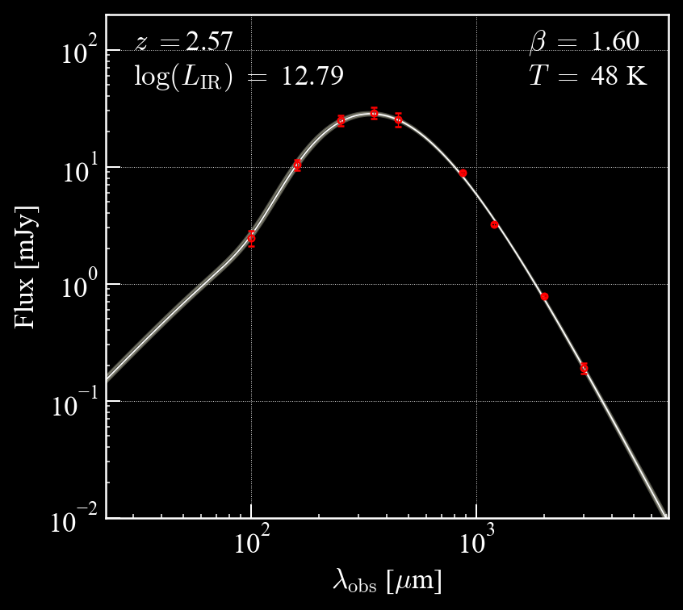

My Research
I'm trying to understand the properties of and processes governing dusty star-forming galaxies (DSFGs) across cosmic time.
 DSFGs are the most powerfully star-forming galaxies in the Universe, forming hundreds to thousands of solar masses per year. These galaxies contain large quantities of astrophysical dust*, which obscures ultraviolet and optical starlight and reemits the energy at far-infrared and submillimeter wavelengths. DSFGs play an important role around "cosmic noon", where the Universe's star formation peaked; they are also intimately tied to large-scale structure formation, often serving as markers of larger, gravitationally interacting structures made up of tens to hundreds of galaxies.
Spectroscopic Redshifts for Dusty Star-forming Galaxies
Determining accurate redshifts for DSFGs—in other words, how far away they are in both time and space—is crucially important for measuring many of their detailed characteristics and for connecting them as a population to their descendants (such as massive quiescent galaxies).
Getting these redshifts is hard!
Identifying DSFGs with Red Colors in JWST NIRCam imaging
Fringilla nisl. Donec accumsan interdum nisi, quis tincidunt felis sagittis eget. tempus euismod. Vestibulum ante ipsum primis in faucibus vestibulum. Blandit adipiscing eu felis iaculis volutpat ac adipiscing accumsan eu faucibus. Integer ac pellentesque praesent tincidunt felis sagittis eget. tempus euismod. Vestibulum ante ipsum primis in faucibus vestibulum.
Fringilla nisl. Donec accumsan interdum nisi, quis tincidunt felis sagittis eget. tempus euismod. Vestibulum ante ipsum primis in faucibus vestibulum. Blandit adipiscing eu felis iaculis volutpat ac adipiscing accumsan eu faucibus. Integer ac pellentesque praesent tincidunt felis sagittis eget. tempus euismod. Vestibulum ante ipsum primis in faucibus vestibulum. Blandit adipiscing eu felis iaculis volutpat ac adipiscing accumsan eu
Dust Properties of DSFGs using ALMA
  Fringilla nisl. Donec accumsan interdum nisi, quis tincidunt felis sagittis eget. tempus euismod. Vestibulum ante ipsum primis in faucibus vestibulum. Blandit adipiscing eu felis iaculis volutpat ac adipiscing accumsan eu faucibus. Integer ac pellentesque praesent tincidunt felis sagittis eget. tempus euismod. Vestibulum ante ipsum primis in faucibus vestibulum. Blandit adipiscing eu felis iaculis volutpat ac adipiscing accumsan eu
Paper linkTesting
Observing
I'm very grateful to have had the opportunity to observe with, or use data from, some of the most powerful telescopes on (and off) the planet. My research depends in particular on the best submillimeter telescopes in existence, including the James Clerk Maxwell Telescope, the Atacama Large Millimeter/submillimeter Array, and the NOrthern Extended Millimeter Array.
I have had the chance to observe both remotely and in person with the Keck I and II telescopes in Hawaii, especially with the MOSFIRE spectrograph. I use MOSFIRE to measure the redshifts of DSFGs from bright nebular emission lines.